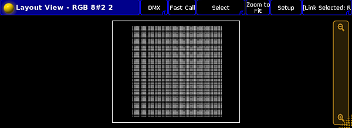
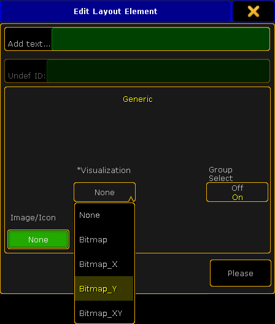
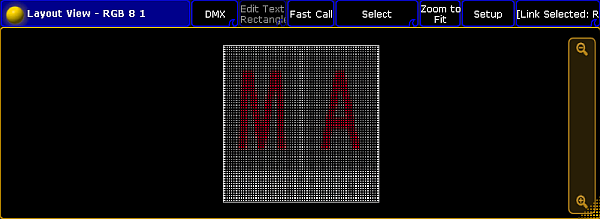
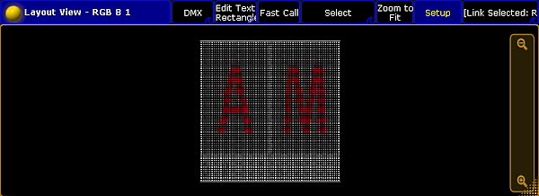
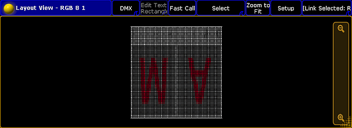
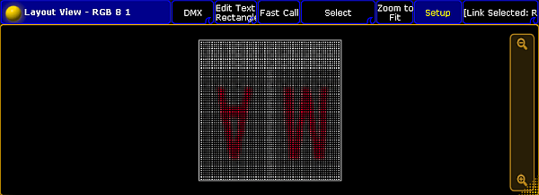

After the bitmap fixture is imported, it is necessary to have a layout containing the fixtures or channels, to use the bitmap fixture. The layout is the VObj (= Video Object) Output.
Tap in the title bar of the layout view Setup.
The layout encoder bar opens.
Tap in the layout encoder bar at the rectangle .
Tap in the layout view and draw a rectangle around the fixtures or channels using the bitmap fixture.

Layout view with rectangle
The Edit Layout Element pop-up opens.

Edit layout element pop-up - visualization
Choose if the fixtures or channels should visualize the content of the bitmap fixture:
- Not mirrored, tap Bitmap
Layout view bitmap not mirrored
- Horizontally mirrored on the x-axis, tap Bitmap_X
Layout view bitmap x
- Vertically mirrored on the y-axis, tap Bitmap_Y
Layout view bitmap y
- Horizontally and vertically mirrored on the x- and y-axis, tap Bitmap_XY
Layout view bitmap xy
Press Please or tap Please.
Important:
The rectangle is a visual display and it represents the side ratio of the picture or the video. It is possible to use several rectangles in a layout. The rectangles can be mirrored individually as shown above.
Hint:
To move the rectangle, use the move x or move y encoder or tap and hold the rectangle in the layout view and move it around.
To adjust the size of the rectangle for e.g. a 16:9 ratio, tap in the layout encoder bar at Position 1 of 3 to get Size 2 of 3. Use the encoder to adjust size x and size y.
The bitmap visualization is assigned to the fixtures or channels in the layout.